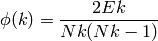

Return the rich-club coefficient of the graph G.
The rich-club coefficient is the ratio, for every degree k, of the number of actual to the number of potential edges for nodes with degree greater than k:

where Nk is the number of nodes with degree larger than k, and Ek be the number of edges among those nodes.
| Parameters : | G : NetworkX graph normalized : bool (optional)
Q : float (optional, default=100)
|
|---|---|
| Returns : | rc : dictionary
|
Notes
The rich club definition and algorithm are found in [R99]. This algorithm ignores any edge weights and is not defined for directed graphs or graphs with parallel edges or self loops.
Estimates for appropriate values of Q are found in [R100].
References
| [R99] | (1, 2, 3) Julian J. McAuley, Luciano da Fontoura Costa, and Tibério S. Caetano, “The rich-club phenomenon across complex network hierarchies”, Applied Physics Letters Vol 91 Issue 8, August 2007. http://arxiv.org/abs/physics/0701290 |
| [R100] | (1, 2) R. Milo, N. Kashtan, S. Itzkovitz, M. E. J. Newman, U. Alon, “Uniform generation of random graphs with arbitrary degree sequences”, 2006. http://arxiv.org/abs/cond-mat/0312028 |
Examples
>>> G = nx.Graph([(0,1),(0,2),(1,2),(1,3),(1,4),(4,5)])
>>> rc = nx.rich_club_coefficient(G,normalized=False)
>>> rc[0]
0.4